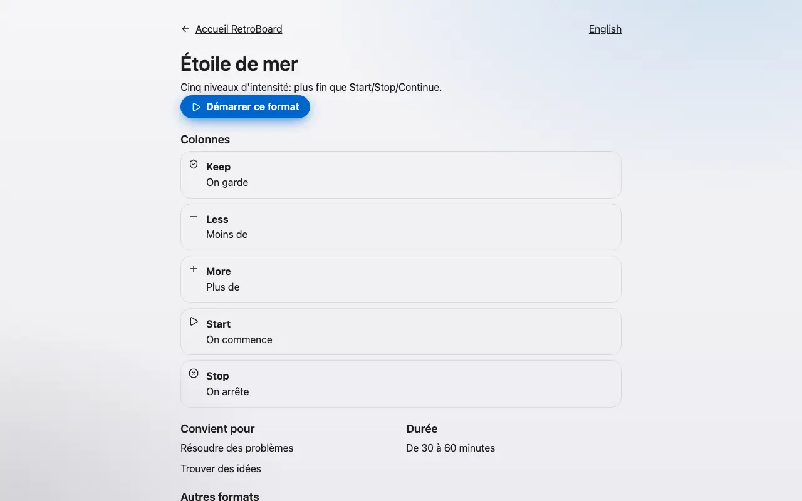
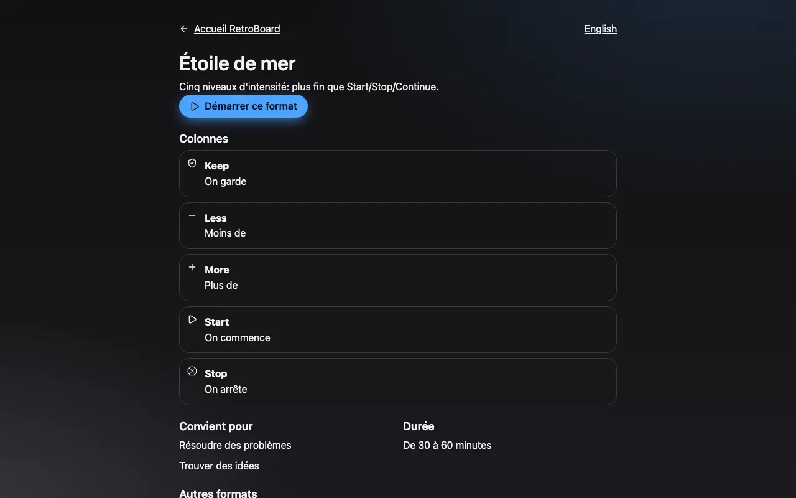
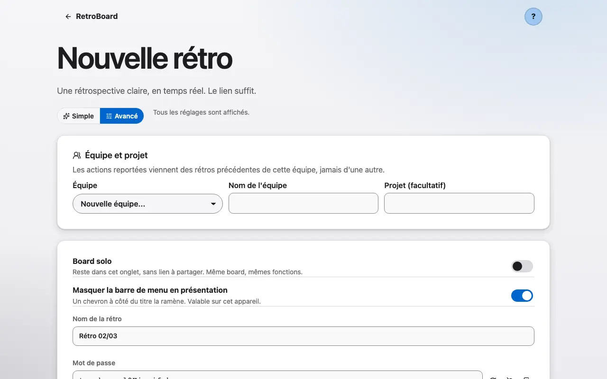
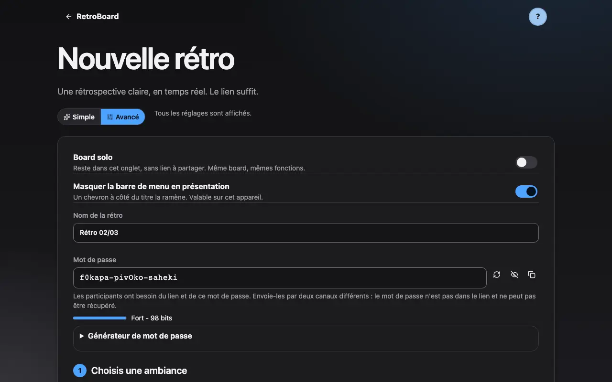

Les pages des formats
Chaque format de rétro a sa page publique, avec ses colonnes et un bouton pour le démarrer.
1 La page d’un format montre ses colonnes, les objectifs qu’il sert et sa durée.
La page nomme le format, dit à quoi il sert, liste ses colonnes avec leurs indications, les objectifs qu’il sert et sa durée, et renvoie vers les autres formats. Le texte vient du catalogue qu’utilise l’application elle-même: une page ne peut donc jamais décrire un format que le produit ne propose pas.


2 « Démarrer ce format » ouvre la création d’un board avec ce format déjà choisi.
Appuie sur « Démarrer ce format ». La page de création s’ouvre avec le format déjà sélectionné dans la liste complète; donne ensuite un titre au board et continue comme d’habitude.

